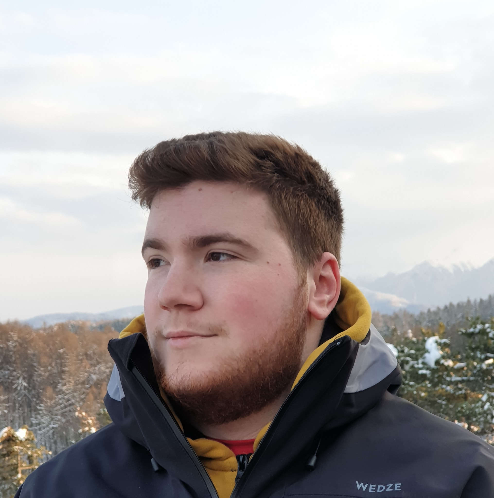

Tudor Birsan

Summary
Self-motivated and dependable IT Support Officer with 3+ years of
experience providing professional technical support to clients, improving
the customer service, and maintaining hardware and software aspects.
Outstanding communicator offering extraordinary technological expertise
and strong determination to perform excellent work.
Education
Work experience
-
Cegedim Rx
Client service executive
02.2021 - present
Bucharest, Romania
-
Hardware/software and fiscal devices support for the partner
pharmacies and medical cabinets belonging from a number of counties
-
Sales, hardware/software support, Microsoft Windows, fiscal printer
repairs and maintenance
-
Successfully solved complex technical problems for a range of
clients, including those in the healthcare industries
-
Managed escalation process for critical issues, ensuring that they
were resolved quickly and efficiently
-
Successfully completed over 1,000 support tickets within the first
year of employment
-
Computer Generated Solutions
Technical support agent with English
05.2020 - 01.2021
Brasov, Romania
- Provided support over the phone for US Yahoo Mail users.
Skills
-
Windows OS - advanced troubleshooting towards resolving complex problems
-
PC hardware - advanced troubleshooting, system building, component
swapping
- AMEF (Cash register) – Certified technician
- Networking - troubleshooting and configurations
- Autocad
- MS Office
- Adobe Photoshop
hobbies
contact